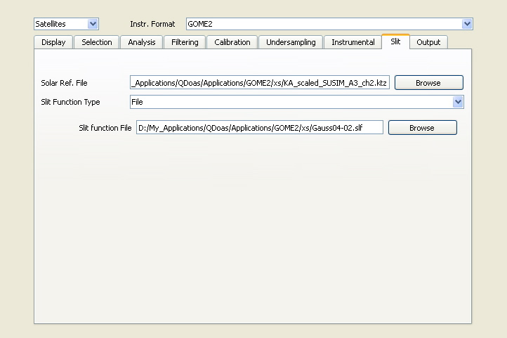

QDOAS Projects Properties : Slit page

Input cross-sections have to be degraded to the resolution of the instrument before the analysis. This can be done using the convolution tool. However the programme also authorizes the direct use of high-resolution cross-sections which will be convolved in real time using information provided in this page if and only if the slit function is not characterized by the wavelength calibration procedure (see the Calibration page of Projects Properties).
Several analytic line shapes are proposed including line shapes supported by the wavelength calibration procedure (gaussian, lorentzian, error function, voigt and asymmetric gaussian line shapes). Different fields have to be completed according to the selected slit function. ASCII file is requested for slit functions measured in laboratory (option File) or when the « Wavelength dependent » button is checked (analytical line shapes).
-
Slit functions measured in laboratory : the first column should be the wavelength grid of the line shape; the maximum of the line shape is expected around 0 nm; look-up tables can be specified for line shapes defined at different wavelength (in this case, the first line gives the individual wavelength);
-
Wavelength dependent analytical slit functions : the input file should contain the FWHM variation with the wavelenth calibration; at a given wavelength, cross-sections will be convolved with the appropriate resolution.
-
Wavelength dependent stretch factors on a user-defined slit function : To account for an asymmetry of the slit function that varies with the wavelength, a three columns ASCII file can be specified in addition to the slit function file. This Stretch on wavelength file should contain the wavelength calibration and the two values of the stretch to apply on the grid of the line shape, one for each side of the slit function. Such a file can be obtained by merging in one file the parameters SFP1 and SFP2 resulting of the wavelength calibration (use the Save As option from the title of the plots to save the curves in an ASCII file).
A high-resolution solar spectrum is expected to replace the solar spectrum of the Calibration page if the slit function is not characterized during the calibration procedure and solar spectrum and cross sections have to be convolved with the line shape specified in this page. Otherwise, if the slit function type of this page is None, preconvolved solar spectrum (in this page) and cross sections (in Analysis windows properties) are expected.